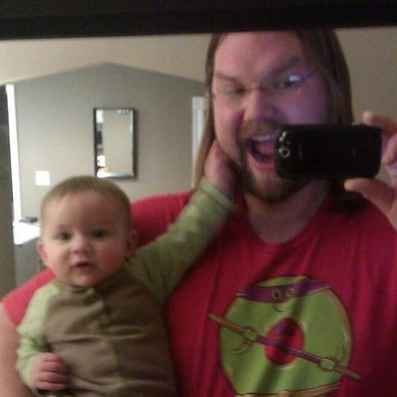

So what is a CoderDojo?
Our CoderDojo pairs kids aged 10 and up with mentors in technology in sessions that teach programming skills. CoderDojo sessions are free and open—just bring a parent or guardian and a laptop computer.
How can I participate?
We need your help in order to be sucessful. We are looking for:
- Students & Parents
- We need parents and their interested kids.
- Mentors
- If you have the ability to teach programming, we want to meet you.
- Volunteers
- Not a crack coder? No problem! We also need help organizing and running sessions.
Who’s behind CoderDojoTC?
Our founders are a mix of technologists, educators, and volunteers:
-  Justin Dessonville @iamdez
-
 Matt Gray
@rrazor
Matt Gray
@rrazor
- Zachary Johnson @zacharyjohnson
- Rebecca Schatz @rebeccaschatz
- Liz Tupper @etupper
- Jessica Zehavi @yiska
We are also grateful to our partners who support the dojo:
I am interested! What’s next?
A registration form will be available soon. Until then, follow us (@CoderDojoTC) on Twitter and join our Google Group to stay informed about our progress.
You can also contact Matt Gray directly; he can be reached on Twitter or via e-mail.